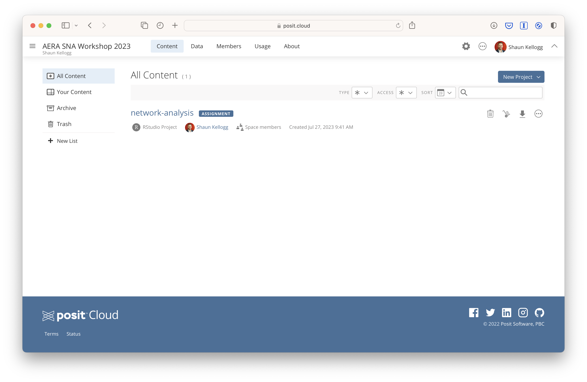

LASER Toolkit
Posit Cloud
For our broader LASER Institute program and for this workshop as well, we will make extensive use of Posit Cloud (https://posit.co/products/cloud/cloud/). Posit Cloud lets you access Posit’s powerful set of data science tools like the RStudio IDE (https://posit.co/products/open-source/rstudio), an integrated development environment (IDE) for R and Python that includes a console and syntax-highlighting editor, as well as tools for plotting, history, debugging, and workspace management. Since Posit Cloud is accessed right in your browser, there is no installation or complex configuration required.
Prior to the workshop, you will need to register for a free Posit Cloud account at: https://login.posit.cloud/register.
LAK24 SNA Workspace
During the workshop, you will need to access our LAK24 SNA Workspace, where we will host the network-analysis RStudio project and instructional materials it contains. To access this workspace, use the following link: go.ncsu.edu/sna-labs. RStudio projects make it straightforward to divide your work into multiple contexts, each with their own working directory, workspace, history, and source documents. To learn more, visit: https://support.posit.co/hc/en-us/articles/200526207-Using-RStudio-Projects.
If you’ve accessed the workspace correctly, you should see something like this:

Posit Primers & Cheat Sheets
To make this most of this workshop it is helpful to have some basic working knowledge of R. If you are new to R, we highly recommend taking advantage of the great resources provided through Posit Cloud for learning R. For example, Posit Primers (https://posit.cloud/learn/primers) provide an excellent series of interactive tutorials that range from R fundamentals like basic programming syntax to complex tasks like building interactive data dashboards. Specifically, we strongly encourage you to complete The Basics primer consisting of:
- Visualization Basics: Start here and begin making plots with R. Plots are one of the most important tools for data science; they are also one of the most fun.
- Programming Basics: This tutorial demystifies programming with R. Here, you’ll learn how to run functions and build objects.
Posit Cheat Sheets (https://posit.cloud/learn/cheat-sheets) also provide handy reference to commonly used packages and their essential functions, including example code for testing them out.
Learn More
Finally, if you are interested in learning more about the LASER Institute and are considering applying for our 2024 cohort, we encourage you to visit our LASER Institute website.
Take care and we’ll see you all soon!!
Shaun B. Kellogg, North Carolina State University
Jeanne M. McClure, North Carolina State University
Daria Smyslova, North Carolina State University
Shiyan Jiang, North Carolina State University
Doreen Mushi, North Carolina State University
Susan Hibbard, Blue Print Prep